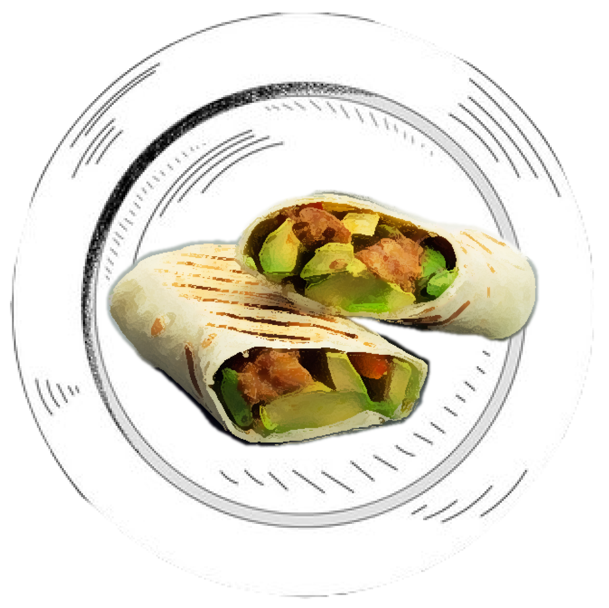

Chicken and Avocado Burrito
Serves: 4
Ingredients
1 low carb whole wheat tortilla
1 cooked shredded chicken breast (can sub with 1/2 cup shredded rotisserie chicken)
1/4 ripe avocado
2 tablespoons cheese of your choice, shredded
1/4 cup salsa
1/4 cup greek yogurt (optional)
4 tablespoons fresh cilantro, chopped

Preparation
Assemble burritos starting with the chicken on the bottom, followed by greek yogurt, salsa, and cheese.
Fold the burrito.
In a pan-fry skillet warm up the burrito and get the tortilla crispy on both sides. Enjoy!